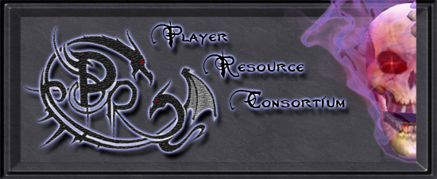

:: PRC v3.3 ::
Welcome to the Player Resource Consortium manual!
Inside you'll find all the current information about the custom PrC's, feats, races, spells, epic spells, and modified spells that this release of the PRC includes.
If you find any errors, ommisions, or mistakes in any of the documentation, please head over to the bug reports
section of the forums and post it in the manual thread. Otherwise, we hope that these pages can satisfy any questions you may have about the PRC or any of the content we have produced.
If you are using Microsoft Internet Explorer and Windows XP SP2 or higher, you may see a yellow bar appear at the top of the window that says "To help protect your security, ...". Please click on the bar and select "Allow blocked content" then press yes in the box that appears. If you do not do this, then the manual will not work correctly.